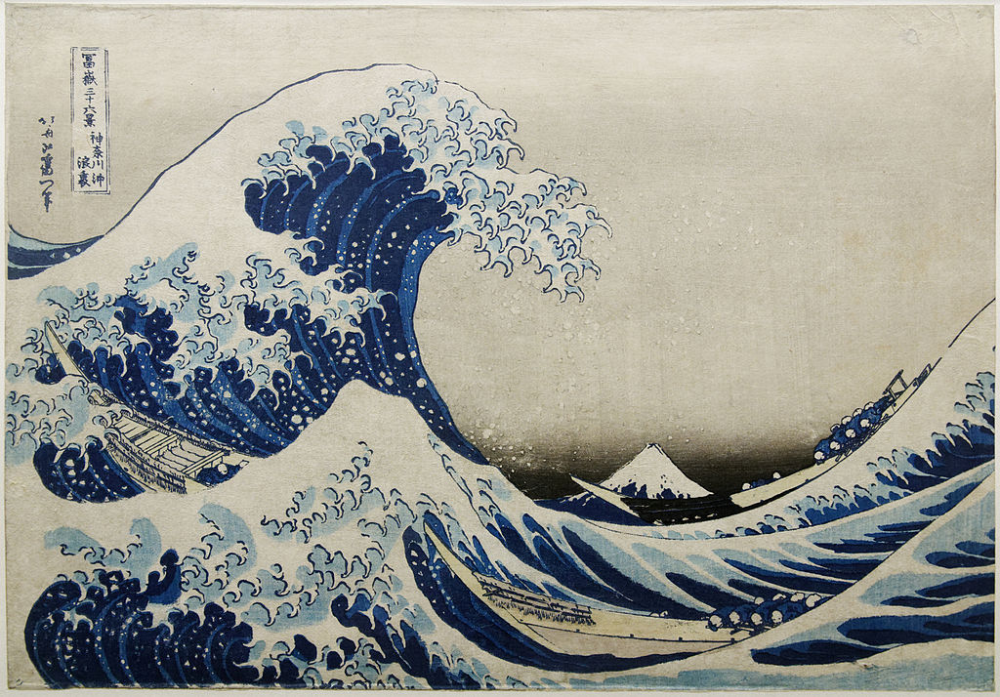

<head>
<meta charset="UTF-8" />
<meta name="keywords" content="drawing, painting" />
<meta name="description" content="drawings by Sunjy" />
<title>Sunjy</title>
<link rel="shortcut icon" type="image/x-icon" href="../../mImages/mCommon/favicon.ico" media="screen" />
<link rel="stylesheet" type="text/css" href="../../mCsses/mCommon/mCssA.css" />
<link rel="stylesheet" type="text/css" href="../../mCsses/mCommon/mCssB.css" />
<link rel="stylesheet" type="text/css" href="../../mCsses/mCommon/mCssC.css" />
<link rel="stylesheet" type="text/css" href="../../mCsses/mCommon/mCssD.css" />
<link rel="stylesheet" type="text/css" href="../../mCsses/mContent/mCssA.css" />
<link rel="stylesheet" type="text/css" href="../../mCsses/mContent/mCssB.css" />
<link rel="stylesheet" type="text/css" href="../../mCsses/mContent/mCssC.css" />
<link rel="stylesheet" type="text/css" href="../../mCsses/mContent/mCssD.css" />
</head>
<script type="text/javascript" src="../../mScripts/mContent/mContentAA.js" /></script>
<script type="text/javascript" src="../../mScripts/mContent/mContentAB.js" /></script>
<script type="text/javascript" src="../../mScripts/mContent/mContentAC.js" /></script>
<script type="text/javascript" src="../../mScripts/mContent/mContentAD.js" /></script>
<script type="text/javascript"></script> 
<script type="text/javascript">
document.write('<div class="mImgAbsolute"></div>');
/*
document.write('<p class="mFontSizeBColor" />From a white paper...</p>');
document.write('<table class="center"><tr><td>');
document.write('');
document.write('</td></tr></table>');
*/
</script>


<script type="text/javascript">
document.write('<p class="mFontSizeBColor" />The Great Wave off Kanagawa </p>');
document.write('<p class="mFontSizeSColor" />The Great Wave off Kanagawa is a woodblock print by the Japanese artist Hokusai which he published in 1831. It was the first print in his series Thirty-Six Views of Mount Fuji.<br><br>The image depicts an enormous rogue wave threatening boats off the coast of the town of Kanagawa, just off the present-day city of Yokohama.<br><br>The print shows seasick fishermen in three boats with a wave about to crash down on them. As in many of the prints in the series, it depicts Mount Fuji in the background.<br><br>Considered Hokusai’s most famous work, it is also one of the most recognizable works of Japanese art in the world. Impressions of the print can be seen in many museums around the world. <br><br>The inscription is a signature in the upper left-hand corner. During his career, Hokusai used more than 30 different names in his signature. He always began a new cycle of works by changing his name in the signature and letting his students use the earlier title.<br><br>Vincent van Gogh was a great admirer of Hokusai, and he praised the drawing and the use of line in the Great Wave.<br></p>');
document.write('<table class="center" /><tr><td>');
document.write('<br>The image depicts an enormous rogue wave threatening boats off the coast of the town of Kanagawa, just off the present-day city of Yokohama.<br><br>The print shows seasick fishermen in three boats with a wave about to crash down on them. As in many of the prints in the series, it depicts Mount Fuji in the background.<br><br>Considered Hokusai’s most famous work, it is also one of the most recognizable works of Japanese art in the world. Impressions of the print can be seen in many museums around the world. <br><br>The inscription is a signature in the upper left-hand corner. During his career, Hokusai used more than 30 different names in his signature. He always began a new cycle of works by changing his name in the signature and letting his students use the earlier title.<br><br>Vincent van Gogh was a great admirer of Hokusai, and he praised the drawing and the use of line in the Great Wave.<br>" />');
document.write('</td></tr></table>');
</script>


